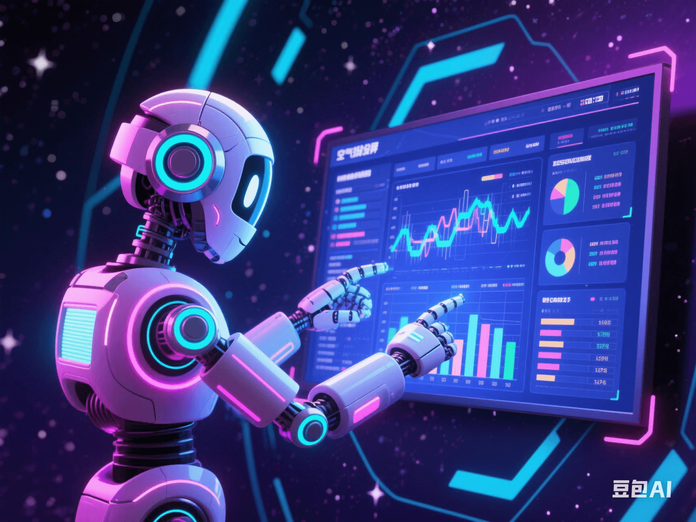

AI 'Digital Intelligence Workers' Taking Over the Office: Will Humans Be Replaced by Excel and PPT?
PeaceLove.Top Insights :2025-04-19
🤖AI 'Digital Intelligence Workers' Taking Over the Office: Will Humans Be Replaced by Excel and PPT? 📉📊
Still staying up late for weekly reports, getting bald for PPTs, and going crazy over spreadsheet formulas? Sorry, your 'hard work' might have been quietly taken over by AI... 😬💻 As 'Digital Intelligence Workers' are being deployed in major global enterprises, the office is witnessing a revolutionary transformation in the workplace. The questions are: 👉 Will humans really be replaced by the AI in PPT and Excel? 👉 How can we avoid being eliminated?
🤯 What Are 'Digital Intelligence Workers'? It's More Than Just a Chatbot!
A 'Digital Intelligence Worker' is not the same as an ordinary AI assistant. It combines: ● 🤖 Large models (such as GPT-4, Gemini) ● 🧠 RPA (Robotic Process Automation) ● 📁 Knowledge graphs + enterprise internal system data. How capable is it? For example, if you say, 'Help me generate a sales analysis PPT for March', it can: ✅ Automatically retrieve data from the CRM system ✅ Automatically analyze strengths and weaknesses based on market trends ✅ Create charts, write titles, and arrange animations ✅ Finally, present you with a complete report in the 'boss-favorite' style 🔥
🏢 Real-World Impact: These Positions Have Been Quietly 'Replaced' or 'Assisted'
| Department | Tasks Taken Over 🤯 | Representative AI Tools |
|---|---|---|
| Finance | Monthly closing, expense review, invoice verification 💵 | UiPath, WorkFusion |
| Marketing | Writing copy, creating PPTs, data analysis 📈 | ChatGPT, Tome, Decktopus |
| Human Resources | Resume screening, interview scoring, training material generation 👩💼 | Paradox AI, Eightfold.ai |
| Customer Service | Automatic replies, emotion recognition, complaint handling 📞 | ChatBot, Kustomer |
| Sales | Automatically generating quotes, follow-up reminders 🧾 | Salesforce Einstein |
Some netizens joked, 'There's an AI sitting at my workstation, and I'm just here to occasionally pour it a cup of coffee.' ☕😅
💡 Humans and AI Will Coexist, but 'Collaboration' Is the Key!
Although AI has taken over a large number of repetitive and structured tasks, it doesn't mean humans will be unemployed. Instead: ✅ Humans handle 'decision-making + emotions + creativity' 🤖 AI takes care of 'execution + organization + reasoning'. For example, if you're a brand manager, AI can generate 10 sets of advertising copy and corresponding user profiles with a single click. However, choosing which one and identifying the 'emotional touchpoints' to engage users still require your insight ✨. This is the core of 'Human-AI Collaboration'.
📉 Who Is at the Greatest Risk? Stop 'Brick-Laying' Office Work!
Warning: The following types of 'experienced workers' are most likely to be replaced by digital intelligence workers ⚠️ ● 😵 Copying and pasting data every day without understanding the business background ● 🤐 Lacking creativity and only modifying old templates ● 😴 Passively responding to instructions, lacking initiative and judgment. The most valuable employees in the workplace are: ● 🔍 Those who are good at asking questions and directing AI (with a Prompt Engineer mindset) ● 🎯 Those who can convert AI outputs into business value ● 🧭 Those with strategic vision and cross-departmental communication skills.
🚀 Don't Fear AI. Learning to 'Tame AI' Is the King's Way!
The new workplace slogan is: **It's not about whether you know AI, but whether you know how to 'command AI'!** 💬👩💻 To avoid being eliminated, you can: 1. Master AI office tools such as Notion AI, Excel Copilot, SlidesAI, etc. 2. Learn prompt design: Be able to ask questions and guide AI to produce more accurate results. 3. Upgrade your thinking: Evolve from an 'executive employee' to a'strategic leader'.
🧩 Final Thoughts: What Will the Future Office Look Like?
💡 It's likely to be a scenario like this: ● You and AI share an account. It does the 'physical work', and you do the 'thinking' 🧠 ● You have five meetings a day, but your AI assistant has already prepared meeting minutes, summaries, and follow-up items 📅 ● Different 'digital intelligence workers' collaborate automatically-like an efficient, never-overtime 'virtual team' 🤝
💬 Conclusion: PPTs Can Be Automatically Generated, but Creativity and Judgment Are Yours Alone.
In this era of the 'digital intelligence wave', instead of worrying about being replaced, take the lead: **Let AI work for you, rather than being replaced by it!** 🔥